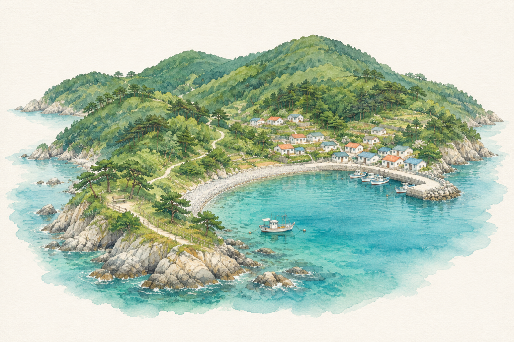

천천히, 듣기
잠시 걸음을 멈추고 가까운 소리와 먼 소리를 하나씩 찾아보세요. 섬의 하루가 다르게 들립니다.
YEOSU, ANDO · A SOUND TO REMEMBER
파도가 닿고, 바람이 쉬어 가는 섬.
당신의 하루에 안도의 소리를 놓아보세요.

섬 위의 소리를 눌러 나만의 풍경을 만들어보세요.
안도에서 영감을 받은 일러스트 · 실제 지형과 다릅니다STAY A LITTLE LONGER
풍경을 보는 여행에서 한 걸음 더.
파도가 자갈을 어루만지는 소리, 나뭇잎 사이로 흐르는 바람에 귀를 기울여 보세요.
안도 사운드트랙은 섬의 자연을 소리로 만나는 작은 여행입니다. 여행 전에는 설렘으로, 머무는 동안에는 느린 산책으로, 돌아온 뒤에는 오래 남는 기억으로 함께합니다.
YOUR OWN SOUND WALK
걸음은 느리게, 감각은 선명하게.
잠시 걸음을 멈추고 가까운 소리와 먼 소리를 하나씩 찾아보세요. 섬의 하루가 다르게 들립니다.
파도에 바람을 더하고, 숲의 노래를 얹어보세요. 마음에 드는 소리 조합을 이 브라우저에 저장할 수 있어요.
다시 쉬고 싶은 날 이곳을 찾아주세요. 익숙한 소리가 여행의 순간을 조용히 데려옵니다.
어디에 있든, 잠시 안도하세요.
다시 섬의 소리 듣기